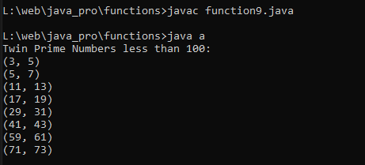

Write a Java method to find all twin prime numbers less than 100.
Code:-
class a
{
public static void main(String[] args)
{
findTwinPrimes(100);
}
private static boolean isPrime(int num) {
if (num < 2) {
return false;
}
for (int i = 2; i <= Math.sqrt(num); i++) {
if (num % i == 0) {
return false;
}
}
return true;
}
private static void findTwinPrimes(int limit) {
System.out.println("Twin Prime Numbers less than " + limit + ":");
for (int i = 3; i < limit; i++) {
if (isPrime(i) && isPrime(i + 2)) {
System.out.println("(" + i + ", " + (i + 2) + ")");
}
}
}
}
Output:-
